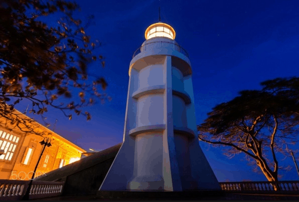

Khám phá ngọn hải đăng – Địa điểm thăm quan thú vị ở Vũng Tàu
Trong hành trình du lịch Vũng Tàu, ngoài dịp được thỏa thích nô đùa với sóng biển, chiêm ngưỡng những cảnh quan thiên nhiên tươi đẹp ra thì bạn còn được chinh phục Ngọn hải đăng Vũng Tàu – một trong những địa điểm tham quan thú vị được nhiều du khách lựa chọn.
Địa chỉ: Nằm trên đỉnh núi Nhỏ (hay có tên gọi là núi Tao Phùng), thuộc phường 2, thành phố Vũng Tàu, tỉnh Bà Rịa – Vũng Tàu, Việt Nam
-
Khám phá vẻ đẹp hoang sơ của Ngọn hải đăng Vũng Tàu

Ngọn hải đăng Vũng Tàu – điểm thăm quan Vũng Tàu hấp dẫn (Ảnh sưu tầm)
Đường đi: Xuất phát từ thành phố Vũng Tàu men theo con đường Ba Mươi Tháng Tư, sau đó đi vào đường Phạm Hồng Thái tới cuối rẽ trái vào đường Lê Lợi. Đến ngã ba Lê Lợi, chúng ta rẽ phải vào đường Hoàng Diệu. Đến cuối đường tiếp tục rẽ trái tới công viên Bãi Trước.
Sau khi rẽ phải từ đường biển Hạ Long, đoạn gần đối diện bến tàu Cánh Ngầm đường băt đầu rộng dần ra. Du khách có thể đi xe thẳng lên hải đăng, tuy nhiên đi bộ men theo triền núi vẫn được rất nhiều du khách lựa chọn để ngắm cảnh xinh đẹp của thành phố biển từ trên cao.
Nằm ở độ cao 170m, ngọn hải đăng có hình tháp tròn, cao 18m, được bao phủ bởi lớp sơn màu trắng tinh tế, nổi bật trên nền trời xanh. Nơi này được bao quanh bởi những tán cây xanh đẹp, thu hút rất nhiều khách du lịch đến thăm quan.
Ngọn hải đăng Vũng Tàu được xem là cổ nhất trong tổng số 79 ngọn hải đăng của Việt Nam và là biểu tượng của thành phố biển Vũng Tàu. Pháp đã xây dựng địa điểm này vào năm 1862 để báo hiệu, chỉ dẫn cho tàu thuyền qua lại.

Con đường thơ mộng để lên đến ngọn hải đăng (Ảnh sưu tầm)
Như đã nói ở trên, để có thể lên được ngọn hải đăng tại địa điểm tham quan Vũng Tàu, du khách sẽ phải men theo con đường uốn lượn dẫn lên núi Nhỏ (hay còn gọi là núi Tao Phùng). Đoạn đường này rất đẹp, nằm uốn lượn duyên dáng bên triền núi. Nơi này còn có những loài cây nhiệt đới chen vách đá tỏa bóng mát xuống lối đi góp phần tạo nên vẻ hoang sơ và tĩnh lặng.
Thả bộ trên con đường nhỏ ven triền núi, hít thở không khí trong lành là thú vui của người dân địa phương lẫn du khách khi du lịch Vũng Tàu. Bên cạnh đó, có rất nhiều khung cảnh đẹp, lãng mạn để bạn và người thân chụp ảnh, lưu lại những kỉ niệm đẹp.
Khi đến địa điểm du lịch Vũng Tàu này, để chiêm ngưỡng công trình kiến trúc đặc sắc của ngọn hải đăng cổ, du khách có thể đi xe máy hoặc ô tô. Tuy nhiên, cũng có nhiều du khách lựa chọn tản bộ để cảm nhận chút phiêu lưu thử thách, hít thở không khí mát mẻ và thưởng ngoạn phong cảnh đẹp nên thơ một cách trọn vẹn nhất.

Nhiều người chọn cách chạy bộ, vừa ngắm cảnh vừa tập thể dục để lên đến ngọn hải đăng (Ảnh sưu tầm)
Nhưng có lẽ cảm giác tuyệt nhất là khi du khách đi qua vườn sứ hàng chục năm tuổi trổ bông thơm ngát dọc lối đi lên ngọn hải đăng tại địa điểm du lịch này, mọi cảm giác mệt mỏi của bạn dường như được xua tan. Đặt chân đến đỉnh núi, bạn sẽ được ngắm trọn vẹn cảnh non nước, chiêm ngưỡng ngọn hải đăng sừng sững, uy nghiêm trong màu trắng muốt vươn cao giữa nền trời xanh thẫm hay nhìn tượng chúa Giêsu dang tay ở cách đó không xa.
Vẻ đẹp của ngọn hải đăng Vũng Tàu lúc về đêm (Ảnh sưu tầm)
Tháp hải đăng tại địa điểm du lịch Vũng Tàu được nối liền với khu nhà ở của những người vận hành, bằng một đường hầm kiên cố, mang kiến trúc độc đáo. Từ cầu thang xoắn ốc trong lòng ngọn hải đăng, với 55 bậc dẫn lên đến đỉnh tháp, du khách sẽ được tận hưởng làn gió mát rượi thổi vào từ biển khơi, phóng tầm mắt bao quát toàn cảnh non nước của thành phố Vũng Tàu. Tiếp tục khám phá vẻ đẹp của ngọn hải đăng ở Vũng Tàu, chúng ta sẽ đi qua khu nhà vận hành đồ sộ, chiêm ngưỡng kiến trúc kiểu Pháp. Đặc biệt, nơi đây có một hầm chứa nước mưa dung tích khoảng 1.000m3, xây dựng để phục vụ sinh hoạt cho người dân.

Từ ngọn hải đăng, du khách có thể nhìn toàn thành phố Vũng Tàu (Ảnh sưu tầm)
-
Vậy tại ngọn hải đăng Vũng Tàu có những góc chụp ảnh nào đẹp ?
Chụp cùng với ngọn hải đăng là một trong những khung cảnh được nhiều du khách lựa chọn. Với vẻ đẹp cổ kính, tinh tế của lớp sơn màu trắng làm cho ngọn hải đăng hiện ra trông thật hùng vĩ và to lớn. Một nơi ngắm cảnh và check-in vô cùng lý tưởng.

Hình ảnh đẹp khi chụp cùng với ngọn hải đăng (Ảnh sưu tầm)
Chụp ảnh cùng với ngọn đèn hải đăng là một trong những ý tưởng vô cùng tuyệt vời của những bạn trẻ. Ánh sáng của ngọn đèn tọa cho khung cảnh trở nên lãng mạng hơn. Khi đứng ngoài lan can trên hải đăng không chỉ được hóng mát từ gió biển mà chúng ta có thể thấy được toàn cảnh Vũng Tàu vô cùng yên tĩnh, thanh bình..
Đứng trên ngọn hải đăng có thể trông thấy Tượng Chúa GiêSu KiTô (Ảnh sưu tầm)
Mở hết tầm mắt chúng ta còn được chiêm ngưỡng Tượng Chúa GiêSu KiTô Vua và núi Minh Đạm vô cùng hoành tráng và ấn tượng. Bãi tắm hình lưỡi liềm bên với làn nước trong xanh cũng là một trong những góc chụp đẹp đê bạn tham khảo. Đặc biệt là vườn hoa sứ xinh đẹp vừa tô điểm vừa tôn thêm nét đẹp kiến trúc và sự vững chãi của ngọn hải đăng.
Khung cảnh đẹp và lãng mạng tại ngọn hải đăng Vũng Tàu (Ảnh sưu tầm)
Ngoài việc thăm quan và chiêm ngưỡng vẻ đẹp hoang sơ và hùng vĩ của ngọn hải đăng Vũng Tàu thì gần đây có nhiều địa điểm du lịch đẹp nữa đấy nhé.
-
Những địa điểm du lịch gần ngọn hải đăng mà các bạn nên tham khảo
- Tượng Chúa GiêSu KiTô Vua
Hay còn gọi là tượng Chúa Dang Tay, một trong những điểm tham quan mà bạn nên tới ít nhất một lần tại Vũng Tàu. Một trong những biểu tượng tâm linh quan trọng của Vũng Tàu, bạn có thể thấy bức tượng từ mọi hướng trong thành phố, đẹp nhất vẫn là đứng trên ngọn hải đăng ở Núi Nhỏô
Tượng Chúa Kitô Vua đón chào khách tham quan hàng ngày từ sáng đến chiều muộn. Tuy nhiên, bạn nhớ là phải lựa chọn trang phục lịch sự, áo có tay và quần hoặc váy dài quá gối. Bởi vì là điểm du lịch tâm linh nên cần phải để ý tới cách ăn mặc. Mặc dù điểm tham quan không thu phí, tuy nhiên du khách có thể quyên góp cho việc trùng tu, bảo dưỡng tượng Chúa.
Vẻ đẹp kì vĩ của bức Tượng Chua GieSu KiTo (Ảnh sưu tầm)
- Niết Bàn Tịnh Xá (chùa “Phật Nằm”)
Niết Bàn Tịnh Xá – Điểm đến du lịch tâm linh của nhiều du khách (Ảnh sưu tầm)
Là một ngôi chùa nằm bên triền Núi Nhỏ, thành phố Vũng Tàu. Điểm đến thăm quan của nhiều khách du lịch trong và ngoài nước. Đây được xem là một trong những ngôi chùa đẹp nhất tại Vũng Tàu với những đường nét kiến trúc Đông Tây kết hợp vô cùng hiện đại
Nổi bật nhất trong khu Chánh điện đó chính là bức tượng “Phật Nằm” dài 12m, được đặt lên bệ thờ cao 2,5m. Tượng trưng cho “Thập Nhị Nhân Duyên”. Trước bệ thờ có đắp hình tượng các đồ đệ của Phật Thích Ca đang chứng kiến lúc Ngài nhập điện.
Ngoài ra còn có rất nhiều công trình kiến trúc khác như Long, Lân, Qui, Phụng vô cùng đẹp và hoành tráng cho bạn chiêm ngưỡng, chụp ảnh.
- Bãi sau Vũng Tàu
Du lịch biển Bãi Sau, điểm đến cuối tuần lý tưởng của nhiều du khách (Ảnh sưu tầm)
Cách ngọn hải đăng không sau là Bãi Sau, một trong những địa điểm du lịch biển nổi tiếng tại Vũng Tàu. Với địa thếvô cùng đẹp, nước biển sạch, không khí trong lành, mát mẻ, có đầy đủ các dịch vụ. Bãi sau là nơi thu hút nhiều đu khách lui tới vui chơi tắm biển nghỉ mát ở Bà Rịa – Vũng Tàu. Khi tới đây, du khách sẽ có cảm giác vô cùng thư giãn và thoải mái sau những ngày làm việc mệt mỏi.
Dọc theo bãi biển, bạn còn có dịp ngắm nhìn khu rừng dương rộng lớn, với nhiều cây cổ thụ xanh rợp trên nền cát trắng. Tạo nên một bản hòa tấu nhạc du dương, rì rào theo gió biển rất thú vị. Tại đây có nhiều loại hình lưu trú như nhà nghỉ, khách sạn, resort … thuận tiện cho du khách nghỉ ở lại. Bạn có thể đi bộ ra tắm biển, kèm theo các cửa hàng lưu niệm, quán xá, chợ du lịch cho du khách thăm quan.
- Bãi Trước – Vũng Tàu
Khung cảnh đẹp tuyệt vời tại Bãi Trước – Vũng Tàu (Ảnh sưu tầm)
Đối diện với Bãi Sau đó chính là Bãi Trước, điểm đến nổi tiếng cho những chuyến du lịch cuối tuần. Bãi biển này nằm giữa Núi Nhỏ và Núi Lớn, là một vịnh nhỏ lặng sóng.
Là mặt tiền của Vũng Tàu, thiên nhiên đã ưu đãi cho Bãi Trước cảnh thơ mộng, là bến đậu của những con tàu trở về sau những chuyến hải trình. Dọc Bãi Trước trồng nhiều dừa, bên dưới những bóng cây xanh rợp mát là một khu công viên đầy hoa dành cho du khách thích đi bộ hóng mát, ngắm cảnh bên tiếng sóng biển du dương.
Trên đây là một địa điểm gần hải đăng mà bạn có tới thăm quan. Nếu có dịp đến địa điểm tham quan Vũng Tàu, du khách nên đến ngọn hải đăng vào buổi tối để cảm nhận hết vẻ đẹp của nơi này. Với ánh đèn rực sáng, ngọn hải đăng tựa như con mắt của đất liền, cần mẫn báo hiệu cho tàu thuyền qua lại trên cả vùng biển trời rộng lớn tối sẫm.
Ngoài ra, nhiều du khách có tâm hồn lãng mạn thường đến ngọn hải đăng để ngắm bình minh và hoàng hôn cũng. Có thể nói, cảnh quan thiên nhiên không phải một bức tranh tuyệt đẹp thơ mộng hữu tình, mà là sự kết hợp hài hòa giữa thiên nhiên, kiến trúc và sự lao động cần mẫn của con người. Tất cả góp phần làm cho bức tranh toàn cảnh thành phố Vũng Tàu thêm đẹp xinh và quyến rũ hơn.
Hiện nay, tháp hải đăng là điểm đến Vũng Tàu luôn có trong lịch trình các tour du lịch của du khách gần xa. Địa điểm du lịch Vũng Tàu này sẽ mang lại cho bạn những giây phút thư thái tuyệt vời và khó quên.
- Tượng Chúa GiêSu KiTô Vua